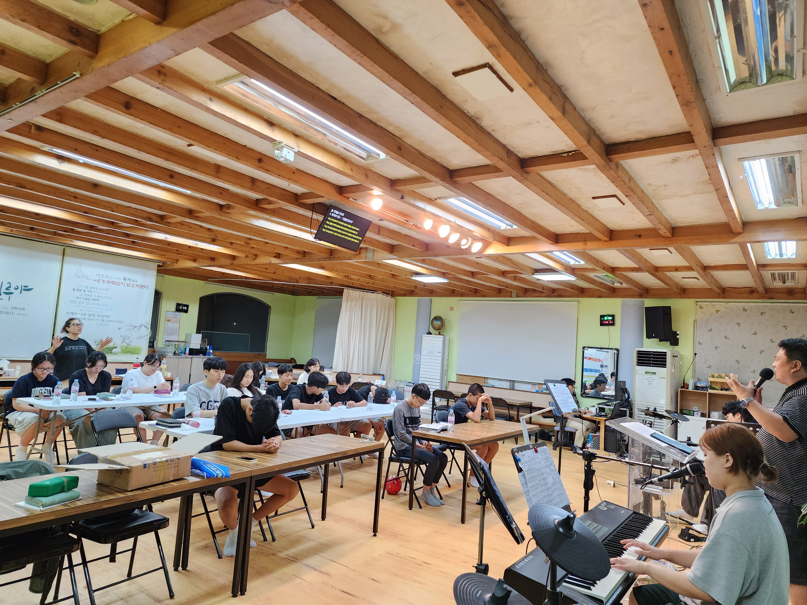
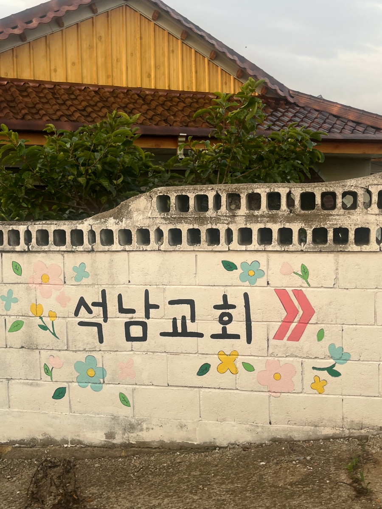
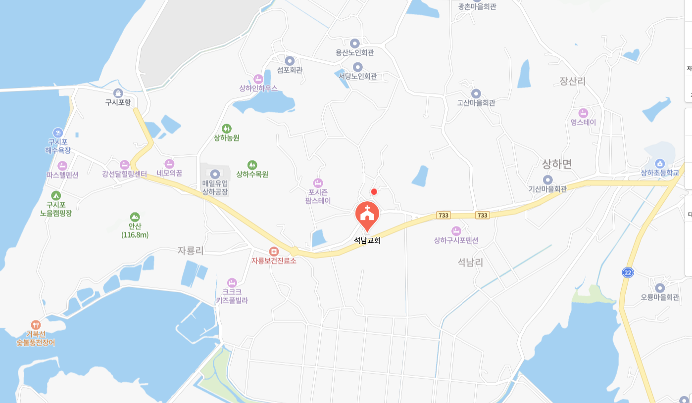
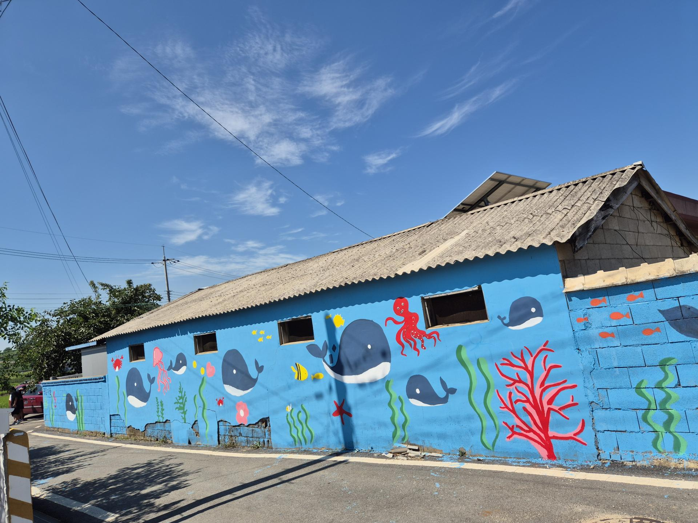
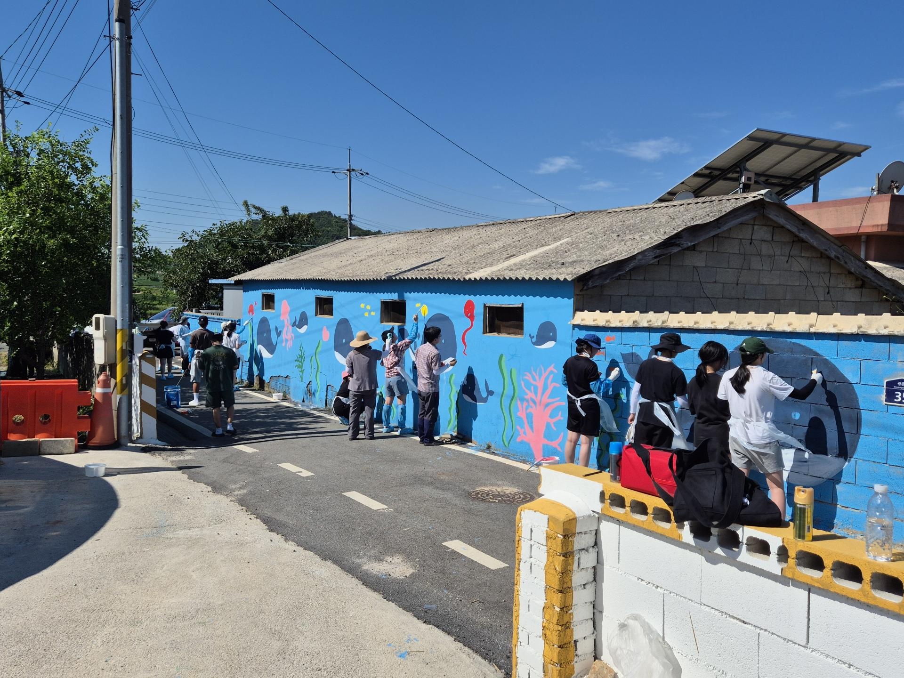
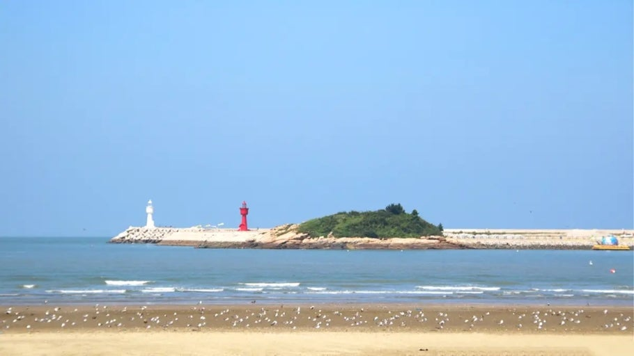
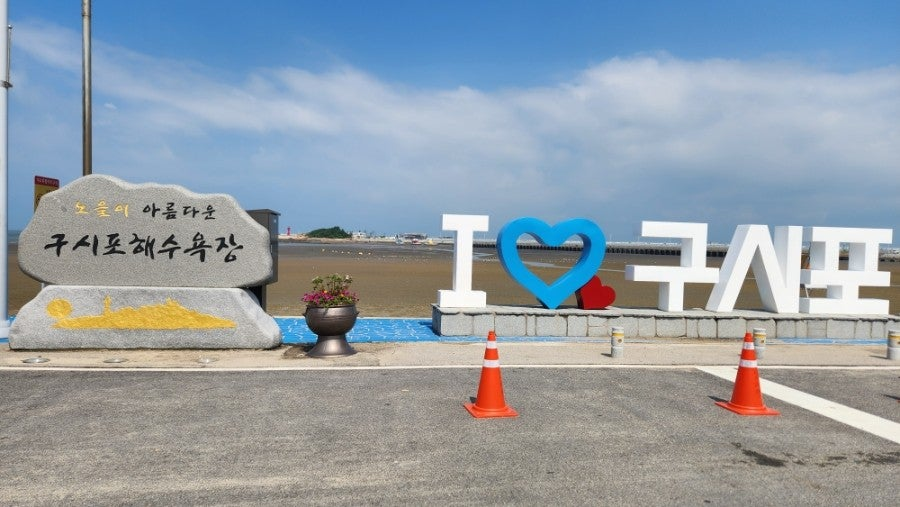
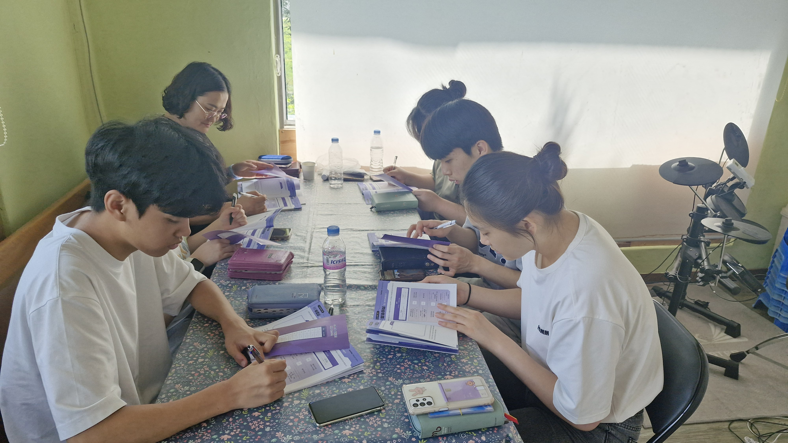
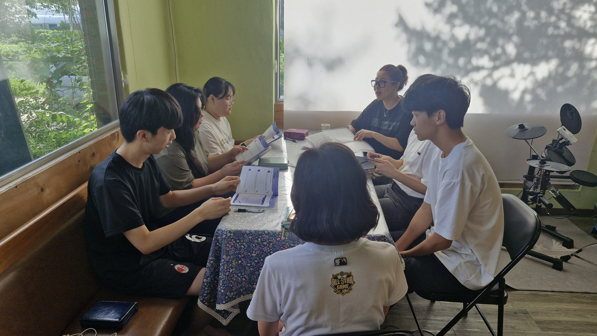

02
DAY 1 저녁 · DAY 2 밤
개회예배 & 저녁집회 1·2
누가복음 8장, 예수님을 알아가고 전하는 밤
청년 찬양팀과 함께 드리는 예배 속에서 누가복음 8장의 말씀을 따라 예수님이 누구신지 다시 만나고, 그 예수님을 어떻게 전할 수 있을지 마음에 새기는 시간입니다.

예수님과 함께하는 믿음의 항해
믿음의 주요 또 온전하게 하시는 이인
예수를 바라보자.
중고등학생 시기는 크고 작은 파도 위에 있는 시간입니다. 성적과 진로, SNS 속 비교, 서투른 관계들, ‘나는 누구인가’라는 질문들이 쉼 없이 밀려옵니다. 방향을 잃기 쉬운 나이입니다.
믿음의 주요 또 온전하게 하시는 이인
예수를 바라보자.
히브리서 기자는 이 흔들리는 삶 속에서 한 가지를 말합니다. 여러 파도 중 하나를 골라 맞서 싸우라는 뜻이 아니라, 시선을 어디에 둘 것인지를 먼저 정하라는 초대입니다. 배가 항로를 잃지 않는 건 파도가 없어서가 아니라, 등대를 계속 바라보기 때문입니다.
2박 3일, 우리는 일상에서 잠시 나와 예수님을 바라보는 연습을 합니다. 예배와 말씀, 나눔과 놀이 속에서 ‘예수를 바라본다’는 것이 관념이 아니라 삶의 태도임을 배우고, 각자의 자리로 돌아가서도 그 시선을 이어가기로 결단합니다.
이 항해의 목적지는 장소가 아니라, 시선입니다.
서해 바닷바람이 닿는 상하면 들녘 위, 작은 교회당에서
2박 3일의 항해가 시작됩니다.
구시포 해수욕장에서 차로 10분 거리, 조용한 시골 마을 안에 자리한 석남교회. 이번 수련회의 모든 프로그램은 이 작은 교회당과 그 앞마당에서 펼쳐집니다.


들녘과 바닷바람이 함께하는
조용한 환경입니다.
석남교회 목사님과 함께
이번 수련회를 준비했습니다.
차로 10분, 2일차 오후
물놀이 장소입니다.
정확한 시간은 별도 가정통신문을 참고해주세요.

붓을 들고, 마을 담벼락에 복음의 색을 입히는 시간
석남교회가 매년 이어온 마을 섬김 활동입니다. 우리 손으로 칠한 파도와 고래가 마을의 표정이 되고, 복음이 교회 담장을 넘어 세상을 향한다는 걸 몸으로 배우는 하루입니다.

누가복음 8장, 예수님을 알아가고 전하는 밤
청년 찬양팀과 함께 드리는 예배 속에서 누가복음 8장의 말씀을 따라 예수님이 누구신지 다시 만나고, 그 예수님을 어떻게 전할 수 있을지 마음에 새기는 시간입니다.


파도 속에서 터지는 웃음, 수련회 중간의 쉼표
석남교회에서 차로 10분, 구시포 해수욕장으로 나갑니다. 말씀과 훈련으로 채운 이틀째, 시원한 바닷물에 몸을 던지며 함께 웃고 뛰노는 자유로운 시간을 갖습니다.


얼굴을 마주하고, 서로의 짐을 나누는 시간
정해진 반별로 둘러앉아 그날 나눈 말씀을 다시 꺼내놓고, 하루 동안 느낀 마음을 솔직하게 이야기합니다. 큰 무대보다 작은 테이블에서 믿음은 자랍니다.

함께 뛰고 웃으며 조금 더 가까워지는 시간
도착한 첫날 저녁, 서먹함을 깨는 팀 게임으로 항해를 시작하고, 3일째 아침 마지막 반별 공과모임을 마친 뒤에는 다 함께 몸을 부딪히며 노는 단체 게임으로 마무리합니다. 웃음 속에서 서로 조금 더 가까워지는 시간입니다.
하루를 마무리하는, 캄캄한 밤하늘의 특별한 불빛
어두워진 바닷가, 등대 불빛 아래로 하늘 위 불꽃이 터집니다. 2일차 하루를 함께 돌아보며 웃고 소리 지르는, 수련회의 밤을 가장 밝게 채우는 시간입니다.
결단과 파송, 일상으로 돌아가는 항해의 시작
3일간의 항해를 마치고, 각자의 자리로 돌아갈 시간입니다. 예수를 바라보며 살아가겠다는 결단을 마음에 안고, 다시 일상이라는 바다로 나아갑니다.
몸을 쓴 만큼, 든든하고 즐겁게 채웁니다
숯불 위에서 지글지글 익어가는
여름밤의 저녁 식사
매일 똑같지 않은,
이번 여름만의 특별한 한 그릇
성도님들이 정성껏 차려주시는
집밥 같은 든든한 한 끼
가볍고 산뜻하게
하루를 여는 조식
정식 일정에 포함된
인근 맛집 외식 시간
활동 사이사이
달콤하고 짭짤하게 채우는 즐거움
수련회를 기다리는 동안,
매일 기도카드로 함께 준비해요.
아이들이 예수님을 바라보며
믿음의 항해를 떠날 수 있도록,
부모님들의 협력과 기도와 후원을 부탁드립니다.